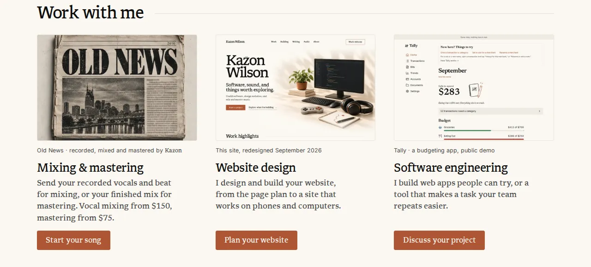
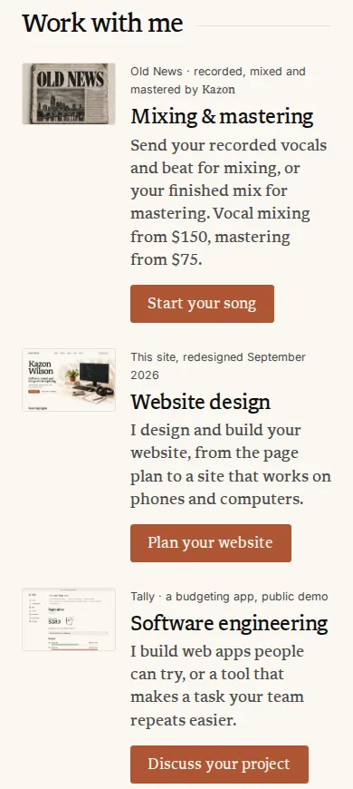
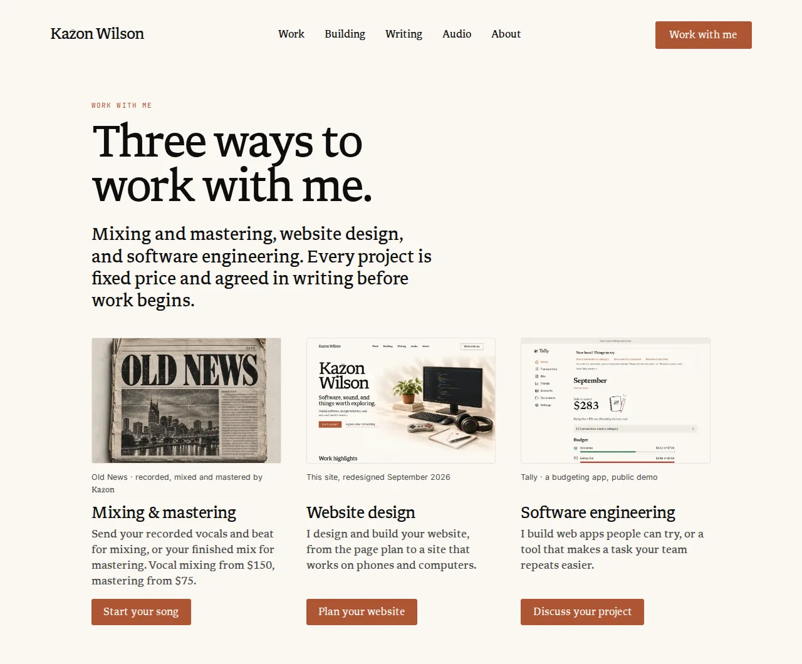
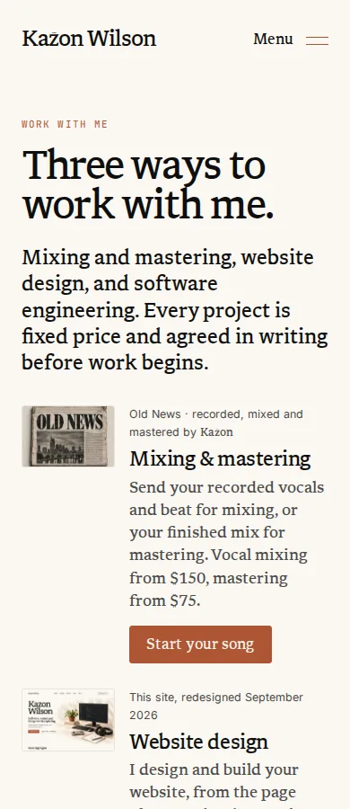

Design study · Hallmark audit follow-up · 2026-10-22
Home doors: alternatives
Two of your calls from the Hallmark audit, each beside what ships today. Nothing here is built. Pick one option per decision and reply with the IDs, for example “D1.1-B, D1.2-C”.
Today’s state is cropped from the CI captures of pull request 199 at 08e9b22. The alternatives are live recreations that use the site’s own CSS values, its real copy and the three approved door pictures. Positions were measured with each change applied, at 1280 × 800, 1440 × 900, 1024 × 768 and 390 × 844, with reduced motion: in the development preview, and for D1.2-D in a static copy of today’s /services first screen that reproduces the live button positions to the pixel (999, 1002, 936 and 739).
On a phone the 1280-wide previews are scaled down to fit. Pinch to zoom; they stay sharp.
Already handled in this pass, no decision needed. These are in PR #204 and apply to every option below.
/services loads the door pictures eagerly, with high fetch priority on the first one (Hallmark #6). Home keeps them lazy.
Door buttons are at least 44px tall, and below 370px wide the button moves under the picture (#20).
The “Kazon” in the Old News caption now uses the caption’s own face (missed-by-auditors 14).
D1.1 · Your call 1 · Home and /services
How should the three “Work with me” doors sit on a wide screen?
Hallmark graded the doors critical as a “3-column feature grid” (home-1, ws-1): three equal columns of picture, title, line and button read like a template feature row. Both verifiers called critical overstated, because the pictures are real, verifiable work rather than icons. Only the wide-screen layout is in question; phones already show picture-left rows.
Where it was decided:docs/audits/2026-09-26/website-simplification-audit.md:223-239 (real work, one image each, chosen from four rendered treatments on September 26) and :509 (the hub’s three doors). Pictures and crops: docs/asset-reviews/work-with-me-doors.md.
D1.1-AKeep as is
Live now
thesuperhuman.us/ · Work with me · 1280 wide · CI capture

390 wide · CI capture

What changes
Nothing. Three equal columns on a shared subgrid, so captions, titles, lines and buttons line up whatever wraps.
Why keep it
It is the treatment you picked from rendered options, the pictures are at their largest (345px wide on Home), and the aligned rows make the three offers easy to compare.
Trade-off
It keeps the shape Hallmark reads as a template feature row, and on /services it is what pushes the buttons below the first screen (D1.2).
Effort · files · measured
None. Home section 537px tall at 1280 (the doors 470px).
Guideline check
Copy unchanged · tokens unchanged · 44px buttons · reduced motion: the doors rise in turn only when motion is welcome and show at once otherwise · no new art.
D1.1-BRuled rows
Recommended
Why this one: it keeps every picture, caption, line and button, drops the feature-row shape with the smallest change, and matches the ruled offer rows on /services and /audio/services and the picture-left shape the phone doors already use.
thesuperhuman.us/ · Work with me · 1280 wide · recreation
Work with me
Phone: unchanged. Today’s phone doors already put the picture left and the words right (see D1.1-A), so every screen size gets the same door shape; the wide rows add the hairline rules between doors.
What changes
On wide screens each door becomes one row between hairline rules: the picture (216 × 144), the caption over the title, the line, and the button at the right edge.
Why it could be better
It reads as a list of three ways in, not a product feature grid. The three buttons line up in one column, so the eye finds them without hunting.
Trade-off
Pictures render smaller on desktop (216px wide instead of 345px), and the Home section grows by about 86px at 1280 (623px against 537px). Some of the gallery feel goes.
Effort · files
S.src/components/WorkWithMe.astro (the wide-screen grid: the subgrid shares columns instead of rows, so lines and buttons still align from door to door; the phone rules stay), docs/asset-reviews/work-with-me-doors.md (new render size, re-inspect), docs/website-content-model.md (record the layout). The hub follows unless D1.2-C gives it its own column.
Guideline check
No copy change · existing tokens only (--rule, --muted, --accent) · buttons stay 44px · Home’s rise-in-turn works unchanged and nothing new moves · no new art: the approved crops render smaller, so the asset record needs a re-inspection line.
D1.1-CLead door and a side column
Alternative
thesuperhuman.us/ · Work with me · 1280 wide · recreation
Work with me
390 wide · recreation
Work with me
What changes
One door leads at about 625px wide; the other two sit beside it as picture-left rows. Shown with Software engineering leading because CLAUDE.md names software as your current direction; any door can lead. On phones the lead door shows its picture full width above the two rows.
Why it could be better
The strongest break from symmetry: a front-page hierarchy, like the Old News masthead. The Tally demo becomes readable at the larger size.
Trade-off
It ranks the offers, which is a positioning call as much as a layout one. The Home section grows by about 169px at 1280 (706px against 537px), and the phone doors by about 190px (1018px against 827px in the recreations). The door order changes from today’s mixing, website, software.
Effort · files
M.src/components/WorkWithMe.astro (lead layout), src/data/work-with-me.ts (order), src/pages/index.astro (rise-in-turn order), docs/asset-reviews/work-with-me-doors.md. The lead picture shows at 625px from a 900px file, so 2× screens need a larger export of the same approved crop.
Guideline check
No new words; the order change needs your approval · existing tokens · 44px buttons · reduced motion unchanged · no new art, but the larger export of an approved crop needs the asset record updated and re-inspected.
D1.1-DOne picture window
Alternative · motion
thesuperhuman.us/ · Work with me · 1280 wide · live recreation: point at, tap or tab to a row
Work with me
Replay steps through the three rows. With reduced motion the picture swaps at once.
Phone: unchanged. Each row keeps its own small picture, as today; there is no window on touch screens.
What changes
The offers become text rows on the left. One large window on the right shows the picture of the row you point at or tab to, wiping in from the left over 600ms on the house curve (--ease-site). The caption follows the picture.
Why it could be better
A calm list, one big picture, and a little life that answers the visitor instead of playing by itself.
Trade-off
Two of the three pictures are hidden at rest on wide screens, which weakens the “real work, one image each” proof you chose. It also adds a hover-driven reveal and a small script, and the window (487 × 325 at 1280) is wider than the 370px the asset record covers, so the 900px files fall just short of 2× there.
Effort · files
M.src/components/WorkWithMe.astro, a small script on the shared layer beside src/scripts/scroll-scenes.ts, src/pages/index.astro, src/layouts/ServiceSheet.astro, docs/asset-reviews/work-with-me-doors.md (window size).
Guideline check
No copy change · existing tokens and --ease-site · 44px buttons; keyboard focus swaps the picture too · reduced motion: the picture swaps at once with no wipe · no new art.
D1.2 · Your call 15 · /services first screen
Should the door buttons fit the first screen at 1280 × 800?
Hallmark’s hero-fit gate (ws-10) found the three door buttons below the fold on a 1280 × 800 screen (with today’s 44px buttons they run from y 955 to 999). The first screen shows the pictures and their captions; the titles start at 804 and no button shows. The audit’s suggested trim (a two-line lede, less top padding) is not enough on its own: the buttons need to rise about 200px. Phones are fine: the first button ends at 739 of 844.
In each frame the dashed line marks the bottom of the first screen (800px on a computer, 844px on the phone); everything under it is dimmed.
Where it was decided:docs/audits/2026-09-26/website-simplification-audit.md:509 (the hub at /services: three doors, then the software offerings) and :235-239 (the hub’s doors use Home’s picture-and-button treatment).
D1.2-AKeep as is
Live now
thesuperhuman.us/services · 1280 × 800 · CI capture

800px
390 × 844 · CI capture

844px
What changes
Nothing. The kicker, a two-line 70px headline and a four-line introduction, then the three doors.
Why keep it
The big headline and the full sentence set the tone. The pictures and captions already show in the first screen, and the titles and buttons are one short scroll away.
Trade-off
At 1280 × 800 no button shows until the visitor scrolls. Buttons end at 999 (1280 × 800), 1002 (1440 × 900) and 936 (1024 × 768).
Effort · files
None.
Guideline check
Unchanged. The eager loading above already gets the pictures on screen sooner.
Phone: same layout (the side-by-side header applies from 900px wide). The kicker goes at every width, so the phone’s first button rises from 739 to 706.
What changes
From 900px wide the headline sits on the left and the introduction on the right, at 24px instead of 27px, bottom-aligned. The “Work with me” kicker goes, since it repeats the header button and the headline; the eyebrow entry (Your call 4) lists it as an easy cut. copy change, needs approval
Why it could be better
A small CSS change that keeps the large headline and the three-column doors. Buttons end at 788 (1280 × 800), 791 (1440 × 900) and 744 (1024 × 768).
Trade-off
It depends on cutting the kicker. With the kicker kept, the buttons end at 821; a 2:1 picture window would bring them to 771, but it hides the bottom quarter of each picture and needs a crop re-check. Only 12px to spare at 1280 × 800. It needs the hub’s doors to stay in three columns (D1.1-A, or the hub keeping them if Home changes).
Effort · files
S.src/layouts/ServiceSheet.astro (the .hub-intro grid and introduction size; the kicker line).
Guideline check
Copy change, needs approval: removes the “Work with me” kicker (overlaps Your call 4); no new words · existing tokens · 44px buttons · reduced motion unaffected · no new art (the 2:1 fallback would need the asset record re-checked).
D1.2-CDoors beside the headline
Recommended
Why this one: it puts all three buttons in the first screen at 1280 × 800 and 1440 × 900 while keeping every word in today’s order: the kicker, the full-size headline and the fixed-price introduction all stay in the first screen. It is also the only option that works whichever D1.1 layout you choose, because the hub gets its own column of doors.
Phone and tablet: unchanged (applies from 1000px wide; below that the hub stacks as today).
What changes
From 1000px wide the hub opens in two columns: the kicker, headline and introduction on the left as today, and the three doors stacked on the right as picture-left rows, the phone layout with 156px pictures.
Why it could be better
The first screen becomes a complete menu: what the page is, three ways in, and each button. Buttons end at 367, 580 and 793 at 1280 × 800 and at 1440 × 900. Same door shape as on phones.
Trade-off
The hub doors look different from Home unless D1.1-B or C is chosen. Hub pictures get smaller (156 × 104). The headline runs to three lines. At 1024 × 768 the third button ends at 813, just under the fold (the first two show).
Effort · files
M.src/layouts/ServiceSheet.astro (two-column first screen), src/components/WorkWithMe.astro (a layout prop for stacked rows), docs/asset-reviews/work-with-me-doors.md (hub render size), docs/website-content-model.md (record the hub layout).
Guideline check
No copy change · existing tokens · 44px buttons · reduced motion unaffected · no new art: the approved crops render smaller, so the asset record needs a re-inspection line.
Phone: same order. The paragraph moves in the page itself, so phones also show it after the doors: the first button rises from 739 to 594, and the fixed-price sentence moves from the first screen to about y 1164.
What changes
The headline runs on one line at today’s size (its 14-character cap goes), and the introduction moves from above the doors to just below them, where it closes the three offers. The kicker and the doors stay as they are. order change, needs approval
Why it could be better
The doors move up into the space the introduction held, with no word cut and nothing made smaller: the h1 stays the largest type on the page. Buttons end at 778 (1280 × 800), 779 (1440 × 900) and 748 (1024 × 768), and Home and the hub keep one door shape.
Trade-off
The fixed-price sentence leaves the first screen (it sits at y 810 to 951 at 1280 × 800), and the stacked two-line headline becomes one long line. It needs the hub’s doors to stay in three columns: with D1.1-B’s ruled rows on the hub, the third button ends at 802.
Effort · files
S.src/layouts/ServiceSheet.astro (move the .sheet-introduction paragraph after .hub-doors, drop the h1’s max-width: 14ch, and keep the paragraph out of the printed sheet, as the hub introduction is today).
Guideline check
No new or cut words; the order change needs your approval · existing tokens · 44px buttons · reduced motion unaffected · no new art · heading sizes keep their order (h1 largest).
How they combine
The two choices work together
D1.1-B with D1.2-CThe recommendation. One door shape everywhere: full-width rows on Home, a column of rows beside the headline on /services, and today’s rows on phones.
D1.1-A with D1.2-B or DHome and the hub keep today’s three columns, and the hub’s introduction makes room for the buttons: beside the headline (B) or after the doors (D). Both need the hub in three columns.
D1.1-C or D with D1.2-CHome gets the lead door or the picture window; the hub uses the stacked rows, which suit a narrow column better than either.
Your calls
What I need from you
D1.1 · Doors on wide screensA keep three equal columns · B ruled rows · C lead door and a side column · D one picture window.Recommended: D1.1-B
D1.2 · /services first screenA keep · B headline beside the introduction (cuts the kicker) · C doors beside the headline · D introduction after the doors.Recommended: D1.2-C
If you pick D1.1-C, also say which door leads. Shown with Software engineering; today’s order starts with Mixing & mastering.